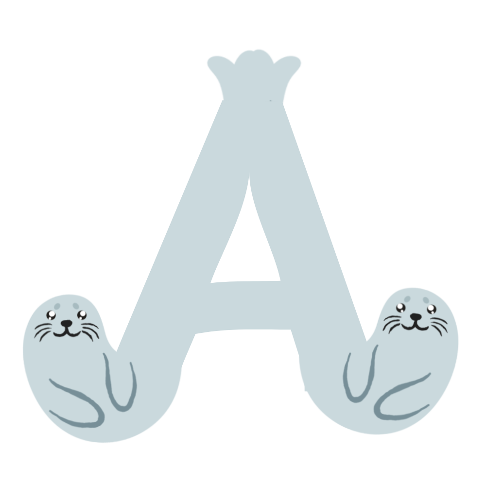

axiom-mirror --list
axiom@pc:~$ list-iso-mirrors

AXM is written directly in C for sub-millisecond execution because I wanted it to be insanely fast. It keeps your system declarative via files in /etc/axiom/axm/packages.d/ (like system.list and flatpak.list). You run sudo axm pkg-add [PACKAGE] to add packages, axm pkg-rfsh to refresh repos (built Sid version-drift proof so unstable mirror shifts don't ruin your day), axm pkg-updt to cache updates locally, and axm apply to install everything (with Gentoo source compilation prompts if you're compiling). It uses a memory-mapped binary search index (packages.bin) built weekly via GitHub Actions to resolve cross-distro package names in under 1ms. And yes, to keep you from accidentally nuking your pristine host system, native system installs require a physical reach keyguard (ctrl + ;) and typing <3 Proceed (yes, Deltarune-inspired). Take a wild guess why!
Basically, you get to run software from literally any distro without installing their system junk or breaking your main OS libraries. Want Arch or CachyOS packages? Grab rolling. Fedora? secure. Rawhide? latest. Debian, Alpine, Gentoo? Just pick the tag. Other solutions like Bedrock Linux modify the core host filesystem directly, or like Vanilla OS and BlendOS use heavier multi-layer setups. Distropaks integrate directly into your host system—exporting desktop shortcuts, icons, and binaries so they feel and launch just like native packages! If you ever want to test a sketchy script or run a quick command without leaving a trace, type axm run [DISTROPAK] to drop into a throwaway shell that nukes itself the second you exit. That's pretty much it.
Universal log diagnostics and emergency recovery. Axiom-SOS aggregates and hypersorts error logs across all containers and host layers by severity from worst to best—so kernel panics sit at the very top and chatty driver warnings sit at the bottom where you can ignore them. If your system refuses to boot, mount your drive on another PC and run axiom-blackbox to get a clean tree of root errors that bricked it. And if you messed up your system, axiom-rescue gives you an initramfs prompt on boot: press 'R' for a 1-key Ext4 snapshot rollback in under 5 seconds. Bob's your uncle!
Hardware, driver, and kernel integration center. axiom-modhub manages proprietary GPU drivers, firmware, and motherboard BIOS updates. It includes axiom-modhub -kS (Kernel Swap) which brings up an eselect-like kernel list to instantly swap kernels in 3 seconds using kexec without rebooting your motherboard! Plus, background updates (axm apply --idle) run inside cgroups with ionice low-priority scheduling so your game or video compilation never loses a single frame.
Total permission and security control. axiom-locker is a TUI/CLI permission manager for Flatpaks, Snaps, and Distropaks, automatically tweaking Flatpak permissions on install to act like native apps out of the box. axiom-shield runs on a timer (every boot or weekly) to check your installed packages against live zero-day CVE databases, while axm audit scans system binary hashes against official GPG signatures to make sure nothing was tampered with.
First-boot setup, visual browsing, and desktop styling. axiom-welcome launches a clean TUI wizard right after install to help you pick drivers and distropaks. axiom-appstore gives you a keyboard-navigable terminal storefront (inspired by Pamac and Shelly). If an APT package dependency collides on Sid, axm resolve automatically offers 1-click alternative Distropak paths. And axiom-theme translates your wallpapers, cursors, and GTK/Qt/XFCE themes across all installed DEs in real-time so your desktop looks cohesive everywhere.
Test risky stuff and control system state safely. Run axm check for dry-run validation. Want to test a sketchy package or script? axm try [PACKAGE] (Shadow VM) spins up a temporary microVM overlay of your live desktop that completely evaporates when you close it! axm revert (Axiom Time-Machine) rolls back Ext4 OverlayFS & rsync state without touching your personal home files. Inspect color-coded state changes with axm diff, or export your exact setup to a Live ISO with axm export --iso.
Stable, super-speed base. Deeply debloated Debian Sid core with custom kernel tuning—you need superpowers to break it. Includes axiom-install, a paginated CLI dashboard modeled after the ease of archinstall so you don't have to manually bootstrap unless you want to. Automatically configures Ext4 single partitions, ESP/Swap, and GRUB supporting both Legacy BIOS (MBR/GPT) and UEFI. Includes axiom-live-desktop for an instant LXQt live environment (looks eh but works!). Prepackaged with Waterfox for a good browser on everything from rust-buckets to supercomputers.
Axiom is an independent passion project architected and programmed from scratch by a 13-year-old developer. Made by a coder, for coders. Yes, you read that correctly. I am 13 years old, solo-deving Axiom. Sure, things like the roadmap and certain elements required the help of AI/vibecoding, but all ideas, MOST of the code, and all the love is from me. Axiom is a 'centrist distribution'—giving you options to use an install script or bootstrap (speaking from experience, I used to require myself to exclusively use Gentoo and LFS for a multitude of reasons!), cutting-edge rolling packages or rock-solid enterprise stability, and pristine host isolation alongside containerized Distropaks. Don't kill me for that!
Transitioning to Axiom without wiping your personal life. The axiom-migrate installer allows you to migrate from your existing Linux distro directly into Axiom without losing any of your personal files, game saves, or dotfiles. It works by safely shrinking your old host OS filesystem, creating a temporary cache partition named "TRANSFER", moving your /home directory and browser profiles over, and then installing Axiom's pristine core. On first boot, the first-boot wizard automatically reconciles permissions and links your home data back cleanly. Zero data loss, zero manual USB backup hassle, and absolutely zero bullshit.
Goal: Making Axiom functional, established, and leveled with regular distributions.
axiom-live-desktop from the live ISO.Goal: Implementing the unique, declarative, and containerized hybrid desktop architecture.
axm package engine in C./etc/axiom/axm/packages.d/ (system.list and flatpak.list).axm pkg-add with interactive source selectors, automatic bypass, fuzzy matching, physical keyguards (ctrl + ;), and confirmation overrides (<3 Proceed).packages.bin) for sub-1ms cross-distro package resolution.axm pkg-rfsh (Sid mirror drift resilient), axm pkg-updt (pre-stage caching), and axm apply (with Gentoo compile prompts).axm/packages.d/.axm run to execute commands in temporary, auto-purged Podman sandboxes.axm boot-profile).Axiom-SOS: Universal log hub indexing errors worst-to-best across containers and host.axiom-blackbox offline recovery script to parse crash failure trees.axiom-rescue initramfs emergency console for 5-second 1-key snapshot rollbacks.axiom-modhub (hardware, drivers, and axiom-modhub -kS 3-sec live kexec kernel swap).axiom-autoheal background daemon to heal configuration drift.axm apply --idle) via cgroups and ionice.axiom-locker TUI/CLI permission manager (auto-granting native Flatpak permissions upon install).axiom-welcome interactive TUI first-boot setup wizard.axiom-appstore keyboard-navigable TUI package storefront.axm resolve smart conflict resolver for multi-engine package collisions.axiom-theme real-time styling sync across GTK, Qt, and XFCE registries.axm export --iso state bundler to compile Live ISOs.axm check) to validate configuration lists safely.axm try [PACKAGE] (Shadow VM) microVM overlay sandbox.axm revert (Axiom Time-Machine) Ext4 OverlayFS / rsync differential rollbacks.axm diff visual state inspector and axm audit GPG binary auditor.axiom-shield timed zero-day CVE vulnerability monitor.Hybrid Declarative Model:
+-----------------------------------+
| ELEVATED SYSTEM LAYER |
| (Declarative Apps, Containers) |
+-----------------------------------+
|
v
+-----------------------------------+
| STABLE DEBIAN BASE |
| (Simple, Rock-Solid) |
+-----------------------------------+
Goal: Refinement, hardening, and building out the distribution community.
Themed around distinct seal species (in order of release):